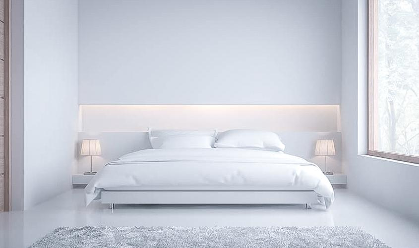
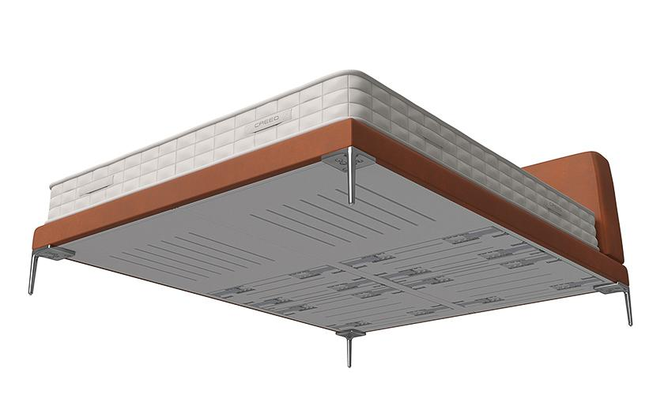
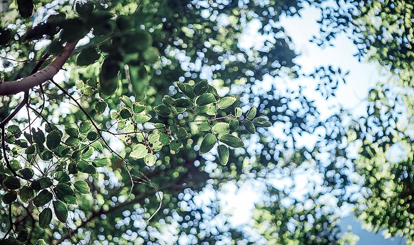
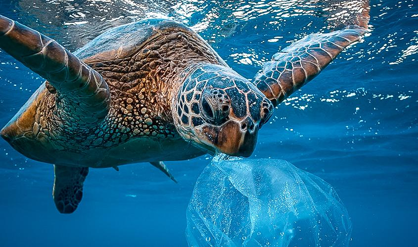

…und auch Ihre Matratze, wenn diese noch in Ordnung ist. Mit unserer Double Spring Box haben Sie die Möglichkeit mit einfachem Austausch des Lattenrostes Ihrem Bett und somit Ihrem Schlaf ein Boxspring-Upgrade zu geben. Was gibt es nachhaltigeres als möglichst viele Komponenten zu erhalten? Sollte Ihr Bettgestell und Ihre Matratze nach all den Jahren auch einen Austausch benötigen, und Sie wollen das beste Design am Markt, schauen Sie sich unser Double Spring Bed an. Da ist unser Federsystem schon inkludiert.
Unser Schlafsystem in Double Spring Box und Double Spring Bed ist verstellbar. Es kann sich also anpassen, auch wenn sich Schlafgewohnheiten, oder Körperform & Gewicht im Laufe der Jahre ändern. Außerdem verwenden wir Materialien die auch nach Jahren noch Ihre Qualität von Tag 1 haben. Darauf geben wir sogar Garantie. Volle 10 Jahre.
Schon heute wollen wir den Plänen der Europäischen Kommission für mehr Nachhaltigkeit entsprechen und planen jede Box oder jedes Bett im Bedarfsfall zu reparieren. Wir haben bei jedem Bett außerdem abnehmbare Bezugsstoffe die reinigungsfähig sind, so leben Sie den Green Deal wie im Schlaf.
Der Bezugsstoff der Double Spring Box und auch der Stoff der Unterfederung im Double Spring Bed sind aus Seaqual®, einem Recycling-Material aus Ocean Plastic. Jedes Jahr erreichen 8 Millionen Tonnen Müll die Meere. 75% liegen unter der Meeresoberfläche und stellen eine unmittelbare Bedrohung für das Leben im Meer dar. Regierungen, Unternehmen und Verbraucher teilen die Verantwortung, die Ozeane für zukünftige Generationen zu erhalten. Mit der Verwendung von Recycling-Material aus Ocean Plastic stellen wir uns dieser Verantwortung. Weiterhin sind unsere Zulieferer-Materialien zertifiziert, mit FSC® aus nachhaltiger Holzwirtschaft sowie Öko-Tex® zur Überprüfung auf Schadstoffe.
Bei der Produktion und der Lieferkette haben wir uns bewusst für kurze Wege entschieden, um den CO2 Abdruck möglichst gering zu halten, aber auch um die regionalen Arbeitsplätze zu sichern. Eine Möbel-Produktion macht da Sinn, wo Kompetenzen vorhanden sind. Wir produzieren derzeit die Box in Polen, das Bett in Deutschland und die Matratzen in Belgien. Premium-Qualität mit kurzen Wegen.